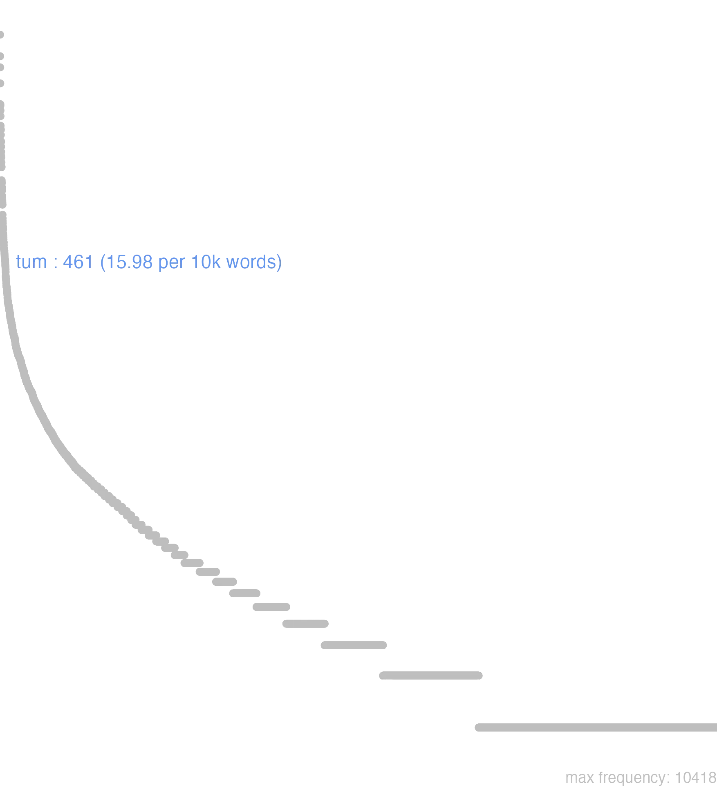

177 tum
177.0.0.1 bases lexicais
id: http://lila-erc.eu/data/id/lemma/129198
classe: advérbio
paradigma: indeclinável
outras grafias:
variantes do lema:
no data
no data
no data
177.0.0.2 dicionários tradicionais
tum
adv.
Obs.: Frequentemente é usado junto de outro advérbio de tempo para reforça-lo; muitas vezes o valor temporal de tum é nulo, sendo empregado na língua falada como simples partícula de insistência: tum … cum Cíc. Div. 1, 118. “quando”.
adv.
Obs.: Frequentemente é usado junto de outro advérbio de tempo para reforça-lo; muitas vezes o valor temporal de tum é nulo, sendo empregado na língua falada como simples partícula de insistência: tum … cum Cíc. Div. 1, 118. “quando”.
1 I-Sent. próprio Então, naquele tempo Cíc. Rep. 2, 16:
2 II-Daí: Depois disso, depois Cés. B. Gal. 5, 26, 4.
3 II-Donde: Além disso, por outro lado Cés. B. Gal. 7, 56, 2.
no data
Tum
adv.
adv.
1 Cic. entaõ, além disto, de mais disto.
2 depois.
3 finalmente, tanto assim.
Tum
conj.
Tum
copulativa particula
Vide infrà Tunc.
copulativa particula
Vide infrà Tunc.
1 saepe ponitur post Cùm, & idem ferè significat, nisi quod Tum maius quoddam in se contineat, aut specialius. Itaque, Cùm significat assim, Tum como tambem
2 In rebus paribus geminatur. Tum
3 geminatur etiam Tum pro Modò
4 ponitur etiam Tum pro Tunc
5 tum autem pro Et, vel Praetereá ou alem disso
6 tum, vel Tum verò non praecedente Cùm pro Deinde depois disso
[EXEMPLOS]
1
uirtutem cum omnes amplecti debent, tum ii praecipue, qui literis uacant
2
omnia tum rebus, tum personis accommodata
3
tum hoc, tum illud dicebat dizia humas vezes huma cousa, outras vezes outra
Tum
aduerb.
aduerb.
1 entonces
177.0.0.3 dados de corpus
![This chart plots collocate by scoreSUBST, for the headword tum here are all the values plotted: collocate: etiam; scoreSUBST: 0. collocate: uero; scoreSUBST: 0. collocate: uersus; scoreSUBST: 3. collocate: denique; scoreSUBST: 0. collocate: demum; scoreSUBST: 0. collocate: cum; scoreSUBST: 0. collocate: iam; scoreSUBST: 0. collocate: uita; scoreSUBST: 2. collocate: magis; scoreSUBST: 0. collocate: primum; scoreSUBST: 0. collocate: casus; scoreSUBST: 2. collocate: ille; scoreSUBST: 0. collocate: religio; scoreSUBST: 2. collocate: quintus; scoreSUBST: 2. collocate: soleo; scoreSUBST: 0](./Media/wordcloud__xx116-117-109xx__BY_collocate_scoreSUBST.webp)
![This chart plots collocate by scoreADJ, for the headword tum here are all the values plotted: collocate: etiam; scoreADJ: 0. collocate: uero; scoreADJ: 0. collocate: uersus; scoreADJ: 0. collocate: denique; scoreADJ: 0. collocate: demum; scoreADJ: 0. collocate: cum; scoreADJ: 0. collocate: iam; scoreADJ: 0. collocate: uita; scoreADJ: 0. collocate: magis; scoreADJ: 0. collocate: primum; scoreADJ: 0. collocate: casus; scoreADJ: 0. collocate: ille; scoreADJ: 0. collocate: religio; scoreADJ: 0. collocate: quintus; scoreADJ: 0. collocate: soleo; scoreADJ: 0](./Media/wordcloud__xx116-117-109xx__BY_collocate_scoreADJ.webp)
![This chart plots collocate by scoreVERBO, for the headword tum here are all the values plotted: collocate: etiam; scoreVERBO: 0. collocate: uero; scoreVERBO: 0. collocate: uersus; scoreVERBO: 0. collocate: denique; scoreVERBO: 0. collocate: demum; scoreVERBO: 0. collocate: cum; scoreVERBO: 0. collocate: iam; scoreVERBO: 0. collocate: uita; scoreVERBO: 0. collocate: magis; scoreVERBO: 0. collocate: primum; scoreVERBO: 0. collocate: casus; scoreVERBO: 0. collocate: ille; scoreVERBO: 0. collocate: religio; scoreVERBO: 0. collocate: quintus; scoreVERBO: 0. collocate: soleo; scoreVERBO: 2](./Media/wordcloud__xx116-117-109xx__BY_collocate_scoreVERBO.webp)
![This chart plots collocate by scoreADV, for the headword tum here are all the values plotted: collocate: etiam; scoreADV: 3. collocate: uero; scoreADV: 3. collocate: uersus; scoreADV: 0. collocate: denique; scoreADV: 2. collocate: demum; scoreADV: 2. collocate: cum; scoreADV: 0. collocate: iam; scoreADV: 2. collocate: uita; scoreADV: 0. collocate: magis; scoreADV: 2. collocate: primum; scoreADV: 2. collocate: casus; scoreADV: 0. collocate: ille; scoreADV: 0. collocate: religio; scoreADV: 0. collocate: quintus; scoreADV: 0. collocate: soleo; scoreADV: 0](./Media/wordcloud__xx116-117-109xx__BY_collocate_scoreADV.webp)
![This chart plots collocate by scoreFUNC, for the headword tum here are all the values plotted: collocate: etiam; scoreFUNC: 0. collocate: uero; scoreFUNC: 0. collocate: uersus; scoreFUNC: 0. collocate: denique; scoreFUNC: 0. collocate: demum; scoreFUNC: 0. collocate: cum; scoreFUNC: 20. collocate: iam; scoreFUNC: 0. collocate: uita; scoreFUNC: 0. collocate: magis; scoreFUNC: 0. collocate: primum; scoreFUNC: 0. collocate: casus; scoreFUNC: 0. collocate: ille; scoreFUNC: 0. collocate: religio; scoreFUNC: 0. collocate: quintus; scoreFUNC: 0. collocate: soleo; scoreFUNC: 0](./Media/wordcloud__xx116-117-109xx__BY_collocate_scoreFUNC.webp)
![This charts plots the frequency of lemma by author_Frequencies. The Vergilius subcorpus registers the highest normalized frequency, with the value of 34.75 and an absolute frequency of 18. The Cicero subcorpus follows, with a normalized frequency of 23.17 and an absolute frequency of 372. the subcorpus with the least normalized frequency is Suetonius with the normalized value of 0 and an absolute freqeuncy of 0. here are all the values: subcorpus: Caesar ; normalized frequency: 22 ; absolute frequency: 8.30878465140872. subcorpus: Cicero ; normalized frequency: 372 ; absolute frequency: 23.1741048067579. subcorpus: Horatius ; normalized frequency: 7 ; absolute frequency: 6.21614421454578. subcorpus: Ovidius ; normalized frequency: 3 ; absolute frequency: 5.14756348661633. subcorpus: Phaedrus ; normalized frequency: 15 ; absolute frequency: 22.772126916654. subcorpus: Sallustius ; normalized frequency: 13 ; absolute frequency: 12.0582506261015. subcorpus: Seneca ; normalized frequency: 10 ; absolute frequency: 1.86633321513223. subcorpus: Suetonius ; normalized frequency: 0 ; absolute frequency: 0. subcorpus: Tacitus ; normalized frequency: 1 ; absolute frequency: 3.43288705801579. subcorpus: Vergilius ; normalized frequency: 18 ; absolute frequency: 34.7490347490347. subcorpus: Hieronymus ; normalized frequency: 0 ; absolute frequency: 0](./Media/barchart__xx116-117-109xx__lemma_BY_author_Frequencies.webp)
![This charts plots the frequency of lemma by genre_Frequencies. The Poesia.épica subcorpus registers the highest normalized frequency, with the value of 34.75 and an absolute frequency of 18. The Prosa.oratória subcorpus follows, with a normalized frequency of 24.48 and an absolute frequency of 255. the subcorpus with the least normalized frequency is Prosa.ficcional with the normalized value of 0 and an absolute freqeuncy of 0. here are all the values: subcorpus: Prosa.histórica ; normalized frequency: 36 ; absolute frequency: 8.76360184035639. subcorpus: Prosa.filosófica ; normalized frequency: 57 ; absolute frequency: 9.39029011054184. subcorpus: Prosa.oratória ; normalized frequency: 255 ; absolute frequency: 24.4832121974403. subcorpus: Prosa.epistolográfica ; normalized frequency: 63 ; absolute frequency: 16.693606083892. subcorpus: Poesia.lírica ; normalized frequency: 7 ; absolute frequency: 5.88878606881467. subcorpus: Poesia.didática ; normalized frequency: 18 ; absolute frequency: 15.2684706081941. subcorpus: Poesia.trágica ; normalized frequency: 7 ; absolute frequency: 6.08061153578874. subcorpus: Poesia.épica ; normalized frequency: 18 ; absolute frequency: 34.7490347490347. subcorpus: Prosa.ficcional ; normalized frequency: 0 ; absolute frequency: 0](./Media/barchart__xx116-117-109xx__lemma_BY_genre_Frequencies.webp)
![This charts plots the frequency of lemma by period_Frequencies. The I.a.C. subcorpus registers the highest normalized frequency, with the value of 20.11 and an absolute frequency of 432. The I.a.C. subcorpus follows, with a normalized frequency of 20.11 and an absolute frequency of 432. the subcorpus with the least normalized frequency is IV.d.C. with the normalized value of 0 and an absolute freqeuncy of 0. here are all the values: subcorpus: I.a.C. ; normalized frequency: 432 ; absolute frequency: 20.1070514312311. subcorpus: I.d.C. ; normalized frequency: 28 ; absolute frequency: 4.28331038702769. subcorpus: II.d.C. ; normalized frequency: 1 ; absolute frequency: 2.61780104712042. subcorpus: IV.d.C. ; normalized frequency: 0 ; absolute frequency: 0](./Media/barchart__xx116-117-109xx__lemma_BY_period_Frequencies.webp)
sic illi tum inanes ad Antiochum reuertuntur
Cic.Ver.2.4.65.20
Assim eles então voltam de mãos vazias para junto de Antíoco [JDD]
ne tum quidem quom iri maxime debuit
Cic.Att.2.1.5
nem mesmo então, quando mais se devia ir.” [JDD, de outra edição]
cum facile orari Caesar tum semel exorari soles
Cic.Deiot.9
9 Costumas, César, não só acolher facilmente os rogos, como também acolhê-los de uma vez por todas. [JDD]
tum uero dubitandum non existimauit quin ad eos proficisceretur
Caes.Gal.2.2.5
Achou, então, que não devia hesitar em partir na direção deles. [JDD]
nihil fortunatius est Catulo cum splendore vitae tum tempore
Cic.Att.2.24.4
Para mim, não há nada mais afortunado que Cátulo, tanto no esplendor de sua vida, quato neste momento. [JDD, de outra edição]
et cum Graecos tum vero diligenter Latinos ut conserves velim
Cic.Att.2.1.12
E gostaria que conservasses cuidadosamente tanto os gregos quanto os latinos. [JDD, de outra edição]
iam tum non consulibus modo sed plerisque senatoribus perniciem machinabantur
Sal.Cat.18.7
Nessa altura, já maquinavam a matança não só dos cônsules, mas da maior parte dos senadores. [JDD]
tum ex Anniana Milonis domo Quintus Flaccus eduxit viros acris
Cic.Att.4.3.3
Então Quinto Flaco conduziu para fora da casa aniana de Milão homens aguerridos. [JDD, de outra edição]
tum iste quam mihi religionem narras quam poenam quem senatum
Cic.Ver.2.4.85.10
Então esse: “De que caráter religioso falas, de que pena, de que senado? [JDD]
et cum uniuerso populo Romano tum uero equestri ordini longe carissimus
Cic.Rab.Perd.39
E ele é de longe o mais caro não só a todo o povo romano, mas também à ordem equestre. [JDD]
tum ego etiam ne si te in Capitolium faces ferre uellet
Cic.Amici.37
Então eu: “Acaso também, se ele quisesse que tu levasses tochas para o Capitólio?” [JDD]
tum demum Ariouistus partem suarum copiarum quae castra minora oppugnaret misit
Caes.Gal.1.50.2
Então finalmente Ariovisto enviou uma parte de suas tropas, para que atacasse o acampamento menor. [JDD]
dulce enim etiam nomen est pacis res uero ipsa cum iucunda tum salutaris
Cic.Phil.13.1.4
Pois até mesmo o nome da paz é doce, mas, na verdade, ela própria é tanto prazerosa como salutar. [JDD]
nostri enim sensus ut in pace semper sic tum etiam in bello congruebant
Cic.Marc.16
Pois nossos pareceres assim como sempre coincidiam na paz, assim também na guerra. [JDD]
par est autem primum ipsum esse uirum bonum tum alterum similem sui quaerere
Cic.Amici.82
Ora, é justo que, primeiramente, ele próprio seja um homem bom e então busque um outro semelhante a si. [JDD]
tum denique liberati per uiros fortissimos uidebamur quia ut illi uoluerant libertatem pax consequebatur
Cic.Phil.1.32.3
Então finalmente parecíamos ter sido libertados graças a homens muito valorosos, porque, como eles tinham querido, a paz seguia a libedade. [JDD]
uentum erat ad Uestae quarta iam parte diei praeterita et casu tum respondere uadato debebat quod ni fecisset perdere litem
Hor.S.1.9.35
Tinha-se chegado ao templo de Vesta, transcorrida já a quarta parte do dia, e, naquele momento, casualmente ele devia responder a uma citação judicial; se não fizesse isso, perderia o processo. [JDD]
177.0.0.4 Diagrama de Zipf
